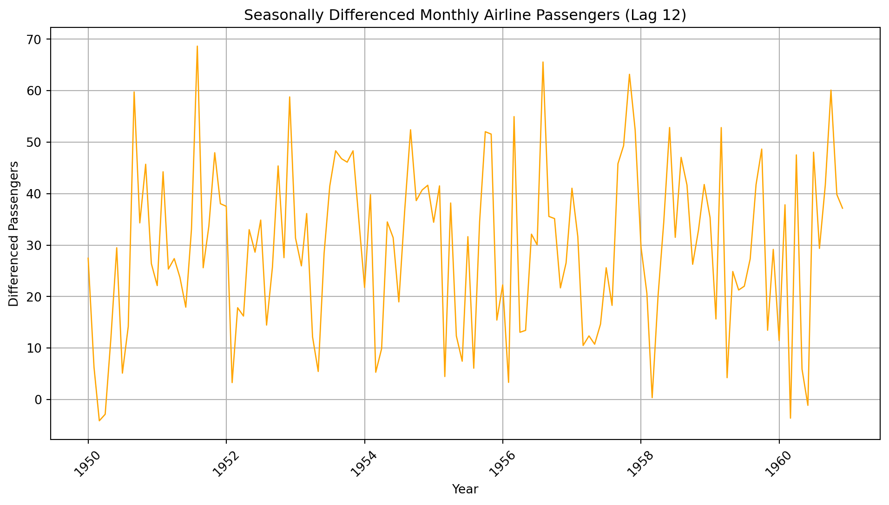
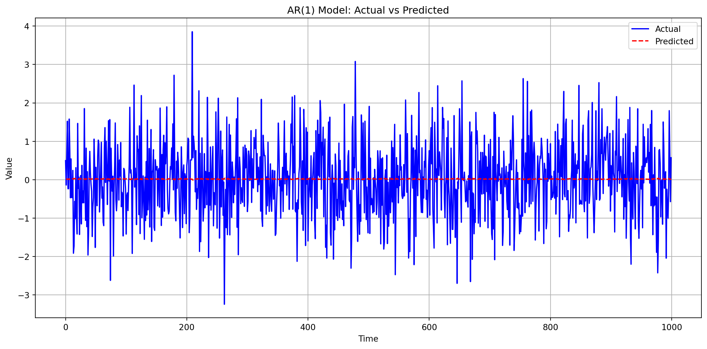

import numpy as np
import matplotlib.pyplot as plt
# Simulate inflation rate data (non-stationary) with a trend and noise
np.random.seed(42)
n = 200 # Number of months
time = np.arange(n)
trend = 0.02 * time # Simulated upward trend
noise = np.random.normal(0, 0.5, n)
inflation_rate = 4 + 0.05 * time + trend + noise # Non-stationary series
# Compute first differences (stationary)
diff_inflation = np.diff(inflation_rate)
# Plotting
fig, (ax1, ax2) = plt.subplots(2, 1, figsize=(10, 8))
# Original series (non-stationary)
ax1.plot(time, inflation_rate, color='blue', label='Inflation Rate (%)')
ax1.axhline(y=4, color='red', linestyle='--', label='Hypothetical Mean (4%)')
ax1.set_title('(a) Simulated Inflation Rate (Non-Stationary)')
ax1.set_ylabel('Rate (%)')
ax1.legend()
ax1.grid(True)
# Differenced series (stationary)
ax2.plot(time[1:], diff_inflation, color='green', label='First Differences')
ax2.axhline(y=0, color='black', linestyle='--', label='Zero Mean')
ax2.set_title('(b) First Differences (Stationary)')
ax2.set_xlabel('Time (Months)')
ax2.set_ylabel('Change (%)')
ax2.legend()
ax2.grid(True)
plt.tight_layout()
plt.show()6 Time series Analysis
6.1 Introduction
Time Series Data:
A sequence of observations in chronological order (e.g., daily log returns on a stock, monthly Consumer Price Index (CPI) values).
Often assumes equally spaced data with a discrete-time index, though real-world data may deviate:
- Daily stock returns exclude weekends/holidays.
- Monthly CPI values are spaced by months (unequal days), but treated as equally spaced for simplicity.
Time Series Models:
Studied for applications in econometrics, business forecasting, and scientific fields.
Aim to capture patterns, dependencies, or trends in sequential data.
Stochastic Process:
A sequence of random variables, representing the theoretical/population analog of a time series.
A time series is a sample from a stochastic process.
“Stochastic” = random.
Stationarity:
A key property for achieving parsimony (simplicity) in time series models.
Assumes distributional invariance over time (e.g., constant mean, variance, and autocorrelation structure).
6.2 Stationary processes
Stationary Processes:
- Definition: Probability models for time series with time-invariant behavior.
- Examples:
- Financial time series (e.g., log returns) where changes may be stationary even if the series itself is not.
- Seasonal demand (e.g., sunscreen, winter coats) with recurring patterns over shorter periods.
Strict Stationarity:
All aspects of the process’s distribution remain unchanged under time shifts.
Mathematically: For any \(m\) and \(n\), \((Y_1, \dots, Y_n)\) and \((Y_{1+m}, \dots, Y_{n+m})\) have identical distributions.
A strong assumption requiring all statistical properties (mean, variance, quantiles, etc.) to be time-invariant.
Weak Stationarity (Covariance Stationarity):
- Requires:
- Constant mean: \(E(Y_t) = \mu\) for all \(t\).
- Constant variance: \(\text{Var}(Y_t) = \sigma^2\) for all \(t\).
- Covariance depends only on lag: \(\text{Cov}(Y_t, Y_s) = \gamma(|t - s|)\) for some function \(\gamma(h)\).
- Example: \(\text{Cov}(Y_2, Y_5) = \text{Cov}(Y_7, Y_{10})\) if \(|2-5| = |7-10| = 3\).
- Requires:
Autocovariance and Autocorrelation:
- Autocovariance function: \(\gamma(h) = \text{Cov}(Y_t, Y_{t+h})\), with \(\gamma(h) = \gamma(-h)\).
- Autocorrelation function: \(\rho(h) = \frac{\gamma(h)}{\gamma(0)} = \frac{\gamma(h)}{\sigma^2}\).
- \(\gamma(0) = \sigma^2\) (variance at lag 0).
Applications and Benefits:
- Enables parsimonious modeling (fewer parameters) for time series data.
- Example: All \(Y_t\) share a common mean \(\mu\), estimated accurately by \(\overline{Y}\).
- Non-stationary series (e.g., stock prices) may have stationary changes (e.g., log returns), allowing modeling.
- Enables parsimonious modeling (fewer parameters) for time series data.
Assessing Stationarity:
Visual inspection:
- Time series plot should show mean-reversion (oscillation around a fixed level).
- Non-stationary series “wander” without returning to a fixed level.
Statistical tests: Formal tests (e.g., ADF test) to evaluate stationarity.
Sample autocorrelation function (ACF): Supplementary tool for analysis.
Challenges:
Stationarity is an assumption, not guaranteed.
Even with stationarity, uncertainty remains (e.g., limited data for estimating \(\mu\) in non-stationary series).
-Dealing with non-stationary data
Example-1:
One-month annualized inflation rate (%) is shown in the code below.
Appears to wander without clear mean reversion.
Ambiguity in stationarity requires further investigation.
First Differences:
Changes between consecutive months (first differences) oscillate around 0%.
Differenced series exhibits stationary behavior (stable mean/variance).
Key Observations:
Non-stationary original series may require differencing for modeling.
Differenced series (\(\Delta Y_t = Y_t - Y_{t-1}\)) simplifies analysis by removing trends.
- Example-2:
- Key Features:
Upward Trend: Persistent increase in passenger numbers over time.
Seasonal Variation:
- Peaks in summer months (e.g., July, August).
- Troughs in winter months (e.g., December, January).
- Increasing Seasonal Amplitude: Seasonal fluctuations grow larger over time.
- Nonstationarity: The combination of trend, seasonality, and increasing variability violates stationarity assumptions.
- Key Features:
import pandas as pd
import numpy as np
import matplotlib.pyplot as plt
import matplotlib.dates as mdates
# Generate synthetic monthly data (1949–1960)
np.random.seed(42)
dates = pd.date_range(start="1949-01-01", end="1960-12-01", freq="MS") # Ensure full date format
# Define n_months correctly
n_months = len(dates)
# 1. Upward trend component (linear increase)
trend_slope = 2.5 # Passengers increase by ~2.5 per month
trend = 100 + trend_slope * np.arange(n_months) # Baseline trend
# 2. Seasonal component (peaks in summer, troughs in winter)
# Amplitude increases over time (non-stationary seasonality)
seasonal_amplitude = 0.5 * np.arange(n_months) # Growing amplitude
month_indices = dates.month.values - 1 # 0-based months (0=Jan, 11=Dec)
seasonal = 20 * np.sin(2 * np.pi * (month_indices - 6) / 12) # Peaks in July (month 7)
seasonal *= (1 + 0.05 * np.arange(n_months)) # Amplify seasonality over time
# 3. Random noise
noise = np.random.normal(0, 10, n_months)
# Combine components
passengers = trend + seasonal + noise
# Create DataFrame
df = pd.DataFrame({"Passengers": passengers}, index=dates)
# Plot
plt.figure(figsize=(12, 6))
plt.plot(df.index, df["Passengers"], color="blue", linewidth=1)
plt.title("Synthetic Monthly Airline Passengers (1949–1960)")
plt.xlabel("Year")
plt.ylabel("Passengers")
plt.grid(True)
# Convert annotation dates to full datetime format
annotate_dates = pd.to_datetime(["1955-07-01", "1950-07-01", "1958-07-01"])
# Annotate features
plt.annotate(
"Upward Trend",
xy=(annotate_dates[0], df.loc[annotate_dates[0], "Passengers"]),
xytext=(pd.Timestamp("1953-01-01"), 300),
arrowprops=dict(facecolor="red", shrink=0.05),
)
plt.annotate(
"Seasonal Peaks (Summer)",
xy=(annotate_dates[1], df.loc[annotate_dates[1], "Passengers"]),
xytext=(pd.Timestamp("1949-06-01"), 200),
arrowprops=dict(facecolor="green", shrink=0.05),
)
plt.annotate(
"Increasing Seasonal Amplitude",
xy=(annotate_dates[2], df.loc[annotate_dates[2], "Passengers"]),
xytext=(pd.Timestamp("1956-01-01"), 600),
arrowprops=dict(facecolor="purple", shrink=0.05),
)
# Format x-axis dates
plt.gca().xaxis.set_major_formatter(mdates.DateFormatter('%Y'))
plt.xticks(rotation=45)
# Differencing to remove seasonality (lag 12)
seasonal_diff = df["Passengers"].diff(12).dropna()
# Plot the differenced series
plt.figure(figsize=(12, 6))
plt.plot(seasonal_diff, color="orange", linewidth=1)
plt.title("Seasonally Differenced Monthly Airline Passengers (Lag 12)")
plt.xlabel("Year")
plt.ylabel("Differenced Passengers")
plt.grid(True)
# Format x-axis dates
plt.gca().xaxis.set_major_formatter(mdates.DateFormatter('%Y'))
plt.xticks(rotation=45)
plt.show()
6.3 Differencing to Make Time Series Stationary
Differencing is a technique used to transform a non-stationary time series into a stationary one. A stationary time series has a constant mean, variance, and autocorrelation over time, which is crucial for many time series forecasting methods.
6.3.1 First Order Differencing
First order differencing involves subtracting the previous observation from the current observation. This helps to remove trends and stabilize the mean of the time series (Example-1 involving the inflation rates has the same scenario).
For a time series \(Y_t\), the first order differenced series \(Y'_t\) is calculated as: \[ Y'_t = Y_t - Y_{t-1} \]
6.3.2 Higher Order Differencing
If the first order differencing is not sufficient to make the series stationary, higher order differencing can be applied. This involves differencing the differenced series.
For example, the second order differenced series \(Y''_t\) is calculated as: \[ Y''_t = Y'_t - Y'_{t-1} \] \[ Y''_t = (Y_t - Y_{t-1}) - (Y_{t-1} - Y_{t-2}) \] \[ Y''_t = Y_t - 2Y_{t-1} + Y_{t-2} \]
6.3.3 Seasonal Differencing
Seasonal differencing is used to remove seasonal patterns. This involves subtracting the observation from the same season in the previous cycle.
For a time series with a seasonal period \(s\), the seasonally differenced series \(Y'_t\) is calculated as: \(Y'_t = Y_t - Y_{t-s}\)
By applying these differencing techniques, we can transform a non-stationary time series into a stationary one, making it suitable for further analysis and forecasting.
6.4 Autoregressive Models: AR(1), AR(p), and Model Selection with PACF
A series displays autoregressive (AR) behavior if it apparently feels a “restoring forcerestoring force” that tends to pull it back toward its mean.
Applications:
- Economics: Modeling GDP, inflation rates, and stock prices.
- Weather Forecasting: Predicting temperature and precipitation.
- Engineering: Signal processing and control systems.
- Healthcare: Analyzing patient vital signs and disease progression.
6.4.1 AR(1) Model
Definition:
A first-order autoregressive model where the current value depends linearly on its immediate past value and a stochastic term.
Formula:
\[
\left( Y_t - \mu \right) = \phi_1 \left( Y_{t-1} -\mu \right) + \epsilon_t, \quad \epsilon_t \sim \text{WN}(0, \sigma^2)
\]
Also written as;
\[ Y_t = c + \phi_1 Y_{t-1}+ \epsilon_t, \quad \epsilon_t \sim \text{WN}(0, \sigma_{\epsilon}^2) \]
where c is the intercept.
Key Properties:
Stationarity: Requires \(|\phi_1| < 1\).
ACF: Exponentially decays.
PACF: Cuts off abruptly after lag 1.
Python Example:
import numpy as np
import matplotlib.pyplot as plt
from statsmodels.tsa.ar_model import AutoReg
from statsmodels.graphics.tsaplots import plot_acf, plot_pacf
# Generate dummy time series data
np.random.seed(42)
n = 1000
data = np.random.randn(n)
# Fit AR(1) model
model = AutoReg(data, lags=1)
model_fit = model.fit()
predictions = model_fit.predict(start=1, end=n-1)
# Plot the actual and predicted time series
plt.figure(figsize=(12, 6))
plt.plot(data, label='Actual', color='blue')
plt.plot(np.arange(1, n), predictions, label='Predicted', color='red', linestyle='--')
plt.title('AR(1) Model: Actual vs Predicted')
plt.xlabel('Time')
plt.ylabel('Value')
plt.legend()
plt.grid(True)
plt.tight_layout()
plt.show()
6.4.2 Autoregressive Model of Order p: AR(p)
6.4.2.1 Definition
The AR(p) model is a linear regression of the current value of a time series against its own past \(p\) values.
Formula:
\[
\left( Y_t - \mu \right) = \phi_1 \left( Y_{t-1} - \mu \right) + \phi_2 \left( Y_{t-2} - \mu \right) + \dots + \phi_p \left( Y_{t-p} - \mu \right) + \epsilon_t
\]
where: - \(\phi_1, \dots, \phi_p\): Autoregressive coefficients - \(\epsilon_t\): White noise error term \(\sim \text{WN}(0, \sigma^2)\)
6.4.2.2 Key Properties
- Stationarity:
- Requires roots of the characteristic equation
\[ 1 - \phi_1 z - \phi_2 z^2 - \dots - \phi_p z^p = 0 \]
- Requires roots of the characteristic equation
to lie outside the unit circle.
ACF: Decays gradually (exponentially or oscillating).
PACF: Cuts off abruptly after lag \(p\).
6.4.2.3 Python Implementation
import numpy as np
import matplotlib.pyplot as plt
from statsmodels.tsa.ar_model import AutoReg
from statsmodels.graphics.tsaplots import plot_pacf
# Generate dummy time series data for AR(p) process
np.random.seed(42)
n = 1000
p = 3 # Order of the AR process
phi = [0.5, -0.3, 0.2] # AR coefficients
data = np.random.randn(n)
# Simulate AR(p) process
for t in range(p, n):
data[t] = phi[0] * data[t-1] + phi[1] * data[t-2] + phi[2] * data[t-3] + np.random.randn()
# Fit AR(p) model
model = AutoReg(data, lags=p)
model_fit = model.fit()
predictions = model_fit.predict(start=p, end=n-1)
# Plot the actual and predicted time series
plt.figure(figsize=(12, 6))
plt.plot(data, label='Actual', color='blue')
plt.plot(np.arange(p, n), predictions, label='Predicted', color='red', linestyle='--')
plt.title(f'AR({p}) Model: Actual vs Predicted')
plt.xlabel('Time')
plt.ylabel('Value')
plt.legend()
plt.grid(True)
plt.tight_layout()
plt.show()6.4.3 Identify Order \(p\) Using PACF
6.4.3.1 What is PACF?
The Partial Autocorrelation Function (PACF) measures the correlation between \(Y_t\) and \(Y_{t-h}\) after removing the effects of the intermediate lags \(Y_{t-1}, Y_{t-2}, \dots, Y_{t-h+1}\).
For AR(\(p\)) models, the PACF helps identify the order \(p\).
6.4.3.2 Method to Determine \(p\)
Plot the PACF of the time series.
Identify Significant Spikes:
- Significant spikes (outside the confidence band) at lags \(1, 2, \dots, p\).
- PACF cuts off (becomes insignificant) after lag \(p\).
Interpretation:
- If PACF drops to near zero after lag \(p\), the process is likely AR(\(p\)).
6.4.3.3 ACF and PACF
Autocorrelation Function (ACF):
The ACF measures the correlation between observations of a time series separated by \(h\) time units (lags).
\[ ACF = \rho(h) = \frac{\gamma(h)}{\gamma(0)} \]
where: - \(\rho(h)\) is the autocorrelation at lag \(h\). - \(\gamma(h) = \text{Cov}(Y_t, Y_{t+h})\) is the autocovariance at lag \(h\). - \(\gamma(0) = \text{Var}(Y_t)\) is the variance of the series.
Partial Autocorrelation Function (PACF): The PACF measures the correlation between \(Y_t\) and \(Y_{t-h}\) after removing the effects of the intermediate lags \(Y_{t-1}, Y_{t-2}, \dots, Y_{t-h+1}\).
Relation to Correlation Factor in Regression:
In regression analysis, the correlation factor (or coefficient) measures the strength and direction of the linear relationship between two variables. Similarly, the ACF and PACF measure the linear relationship between lagged values of a time series.
ACF: Analogous to the correlation coefficient in regression, it measures the linear relationship between \(Y_t\) and \(Y_{t-h}\).
PACF: Analogous to the partial correlation coefficient in multiple regression, it measures the linear relationship between \(Y_t\) and \(Y_{t-h}\) after accounting for the linear relationships with intermediate lags.
By examining the ACF and PACF plots, we can identify the appropriate lag structure for autoregressive models, similar to how we use correlation and partial correlation in regression to identify relevant predictors.
6.4.3.4 Example: Identifying \(p\)
import numpy as np
import matplotlib.pyplot as plt
from statsmodels.graphics.tsaplots import plot_acf, plot_pacf
# Generate AR(2) time series data
np.random.seed(42)
n = 1000
phi1 = 0.6
phi2 = 0.3
data = np.zeros(n)
data[0] = np.random.randn()
for t in range(1, n):
data[t] = phi1 * data[t-1] + phi2 * data[t-2] + np.random.randn()
# Plot ACF and PACF
fig, (ax1, ax2) = plt.subplots(2, 1, figsize=(12, 8))
# ACF plot
plot_acf(data, ax=ax1, lags=40)
ax1.set_title('Autocorrelation Function (ACF)')
# PACF plot
plot_pacf(data, ax=ax2, lags=40)
ax2.set_title('Partial Autocorrelation Function (PACF)')
plt.tight_layout()
plt.show()Output Interpretation
Key Observations:
- Significant PACF Spikes:
- Lag 1: Partial autocorrelation coefficient exceeds the confidence band (statistically significant).
- Lag 2: Another significant spike outside the confidence band.
- These spikes indicate autoregressive terms at lags 1 and 2.
- Cutoff After Lag 2:
- For lags \(h > 2\), PACF values fall within the confidence band (gray dashed lines at \(\pm \frac{1.96}{\sqrt{n}}\)).
- No significant partial autocorrelation beyond lag 2.
Conclusion:
- The PACF plot suggests an AR(2) model is appropriate (\(p = 2\)).
- Further lags (\(p > 2\)) do not contribute meaningfully to the model.
Important
AR (Autoregressive) Models Definition:
Models where the current value depends on its own past values.
Formula:
\[
Y_t = c + \phi_1 Y_{t-1} + \phi_2 Y_{t-2} + \dots + \phi_p Y_{t-p} + \epsilon_t
\]
Strengths:
- Captures persistence/momentum (e.g., temperature trends, stock price inertia).
- Simple to interpret (linear dependence on past values).
Limitations:
- Struggles with short-lived shocks (e.g., sudden market crashes).
- Requires high order \(p\) to model complex dependencies → risk of overfitting.
Ljung-Box Test
The Ljung-Box test is a statistical test used to determine whether a time series exhibits significant autocorrelation at multiple lags. It is particularly useful for diagnosing the adequacy of time series models by checking if the residuals are uncorrelated (i.e., white noise).
Hypotheses
- Null Hypothesis (\(H_0\)): The data are independently distributed (no autocorrelation).
- Alternative Hypothesis (\(H_a\)): The data exhibit significant autocorrelation.
Test Statistic
The Ljung-Box test statistic is given by:
\[ Q = n(n+2) \sum_{k=1}^m \frac{\hat{\rho}_k^2}{n-k} \]
where: - \(n\): Number of observations. - \(m\): Number of lags being tested. - \(\hat{\rho}_k\): Sample autocorrelation at lag \(k\).
Under the null hypothesis, \(Q\) follows a \(\chi^2\) distribution with \(m\) degrees of freedom.
Interpretation
- If \(p\)-value > significance level (\(\alpha\)):
- Fail to reject \(H_0\).
- Residuals are uncorrelated (white noise).
- If \(p\)-value ≤ significance level (\(\alpha\)):
- Reject \(H_0\).
- Residuals exhibit significant autocorrelation.
Applications
- Model Diagnostics: Used to check if the residuals of a fitted time series model are white noise.
- Goodness-of-Fit: Helps assess whether the chosen model adequately captures the structure of the data.
Limitations
- Sensitive to the choice of \(m\) (number of lags).
- Assumes the model parameters are known (may lead to biased results if parameters are estimated).
The Ljung-Box test is a critical tool for validating time series models, ensuring that the residuals are free of autocorrelation and suitable for forecasting.
6.5 Moving Average Models: MA(1), MA(q) models and the choice of q.
A series displays moving-average (MA) model behavior if it apparently undergoes random “shocks” whose effects are felt in two or more consecutive periods.
6.5.1 MA(1) Model
6.5.1.1 Definition
The MA(1) (Moving Average of Order 1) model is a time series model where the current value depends linearly on the current random shock and the previous random shock.
Formula:
\[
Y_t = \mu + \epsilon_t + \theta \epsilon_{t-1}
\]
- \(\mu\): Mean of the series.
- \(\epsilon_t\): White noise error term at time \(t\) (\(\epsilon_t \sim \text{WN}(0, \sigma^2)\)).
- \(\theta\): Coefficient of the lagged error term.
6.5.1.2 Key Properties
- Stationarity:
- MA(1) is always stationary (no restrictions on \(\theta\)).
- Autocorrelation Function (ACF):
- Spikes at lag 1: \(\rho(1) = \frac{\theta}{1 + \theta^2}\).
- \(\rho(h) = 0\) for \(h \geq 2\).
- Spikes at lag 1: \(\rho(1) = \frac{\theta}{1 + \theta^2}\).
- Partial Autocorrelation Function (PACF):
- Decays exponentially (does not cut off abruptly).
6.5.1.3 Example Use Cases
- Stock Returns: Unexpected news (shocks) affecting returns for two days.
- Inventory Management: A supply disruption (shock) impacting current and next month’s inventory levels.
- Weather Data: A temperature anomaly affecting consecutive days.
6.5.2 Moving Average Model of Order q: MA(q)
6.5.2.1 Definition
The MA(q) model is a linear regression of the current value of a time series against the past \(q\) error terms (shocks).
Formula:
\[
Y_t = \mu + \epsilon_t + \theta_1 \epsilon_{t-1} + \theta_2 \epsilon_{t-2} + \dots + \theta_q \epsilon_{t-q}
\]
where: - \(\mu\): Mean of the series. - \(\epsilon_t\): White noise error term at time \(t\) (\(\epsilon_t \sim \text{WN}(0, \sigma^2)\)). - \(\theta_1, \dots, \theta_q\): Moving average coefficients.
6.5.2.2 Key Properties
- Stationarity:
- MA(q) is always stationary (no restrictions on \(\theta\) coefficients).
- ACF:
- Spikes at lags \(1, 2, \dots, q\).
- ACF cuts off abruptly after lag \(q\).
- PACF:
- Decays gradually (exponentially or oscillating).
Invertibility Property of MA Models
6.5.2.3 Definition
The invertibility property of a Moving Average (MA) model ensures that the model can be expressed equivalently as an infinite-order Autoregressive (AR) model. This property is crucial for the uniqueness of the model parameters and for meaningful interpretation.
6.5.2.4 Mathematical Condition
For an MA(q) model: \[ Y_t = \mu + \epsilon_t + \theta_1 \epsilon_{t-1} + \theta_2 \epsilon_{t-2} + \dots + \theta_q \epsilon_{t-q} \]
The invertibility condition requires that the roots of the characteristic equation: \[ 1 + \theta_1 z + \theta_2 z^2 + \dots + \theta_q z^q = 0 \]
lie outside the unit circle (i.e., \(|z| > 1\)).
6.5.2.5 Additional Points
AR(1) can always be rewritten as MA(\(\infty\)) if it is stationary.
AR(p) has an MA(\(\infty\)) representation under stationarity conditions.
Invertibility ensures that an MA(q) process has an equivalent AR(\(\infty\)) representation.
Both properties are crucial in time series modeling to ensure proper interpretation and forecasting.
6.5.2.6 Example
For an MA(1) model: \[ Y_t = \mu + \epsilon_t + \theta \epsilon_{t-1} \] The invertibility condition is \(|\theta| < 1\). If this condition is violated, the model may not have a meaningful AR representation.
6.6 ARMA(p, q) Model
6.6.1 Definition
The ARMA(p, q) (Autoregressive Moving Average) model combines the AR(p) and MA(q) models to describe a time series using both autoregressive and moving average components.
Formula:
\[ \left(Y_t - \mu \right) = \phi_1 \left(Y_{t-1} - \mu \right) + \phi_2 \left(Y_{t-2} - \mu \right) + \dots + \phi_p \left(Y_{t-p} - \mu \right) + \epsilon_t + \theta_1 \epsilon_{t-1} + \theta_2 \epsilon_{t-2} + \dots + \theta_q \epsilon_{t-q} \]
or,
\[ Y_t = c + \phi_1 Y_{t-1} + \phi_2 Y_{t-2} + \dots + \phi_p Y_{t-p} + \epsilon_t + \theta_1 \epsilon_{t-1} + \theta_2 \epsilon_{t-2} + \dots + \theta_q \epsilon_{t-q} \]
where: - \(c\): Constant term (intercept). - \(\phi_1, \dots, \phi_p\): Autoregressive coefficients. - \(\theta_1, \dots, \theta_q\): Moving average coefficients. - \(\epsilon_t\): White noise error term \(\sim \text{WN}(0, \sigma^2)\).
6.6.2 Key Properties
- Stationarity:
- Requires the AR component to satisfy stationarity conditions (roots of the AR characteristic equation must lie outside the unit circle).
- Invertibility:
- Requires the MA component to satisfy invertibility conditions (roots of the MA characteristic equation must lie outside the unit circle).
- ACF and PACF:
ACF and PACF exhibit a combination of behaviors from AR(p) and MA(q) models:
ACF may decay gradually or cut off after lag \(q\).
PACF may decay gradually or cut off after lag \(p\).
The Backwards Operator
- The backshift operator \(B\), also known as the lag operator, is a concise notation useful for describing ARMA and ARIMA models. It is defined as:
\[ B Y_t = Y_{t-1} \]
- More generally, for any integer \(h\):
\[ B^h Y_t = Y_{t-h} \]
- This means that \(B\) shifts the time series back by one unit, while \(B^h\) shifts it back by \(h\) units. Additionally, for any constant \(c\), the operator satisfies:
\[ B c = c \]
since a constant does not vary with time.
- The ARMA model can be represented more compactly using the backward operator as:
\[ \left( 1 - \phi_1 B - \phi_2 B^2 - \dots - \phi_p B^p \right) \left( Y_t - \mu \right) = \left( 1 + \theta_1 B + \theta_2 B^2 + \dots + \theta_q B^q \right) \epsilon_t \]
The Differencing Operator
- The differencing operator is a mathematical tool used to transform a time series by removing trends. It is defined as:
\[ \Delta = 1 - B \]
where \(B\) is the backshift operator.
Applying the differencing operator to a time series \(Y_t\) gives:
\[ \Delta Y_t = Y_t - B Y_t = Y_t - Y_{t-1} \]This operation computes the difference between consecutive observations, effectively removing linear trends and stabilizing the mean of the series.
Differencing can be applied iteratively. For instance, the second-order differencing operator is defined as:
\[ \Delta^2 Y_t = \Delta (\Delta Y_t) = \Delta (Y_t - Y_{t-1}) = (Y_t - Y_{t-1}) - (Y_{t-1} - Y_{t-2}) = Y_t - 2Y_{t-1} + Y_{t-2}. \]
In general, the \(k\)th-order differencing operator, \(\Delta^k\), can be expressed using the binomial expansion:
\[ \Delta^k Y_t = (1 - B)^k Y_t = \sum_{i=0}^k \binom{k}{i} (-1)^i Y_{t-i}, \]
where \(B\) is the backshift operator, and \(\binom{k}{i}\) represents the binomial coefficient.
6.7 ARIMA(p, d, q) Model
6.7.1 Definition
The ARIMA(p, d, q) (Autoregressive Integrated Moving Average) model is an extension of the ARMA(p, q) model that incorporates differencing to handle non-stationary time series.
We can also say, a time series \(Y_t\) is considered an ARIMA(\(p, d, q\)) process if the \(d\)-th differenced series, \(\Delta^d Y_t\), follows an ARMA(\(p, q\)) model.
Formula:
The ARIMA model can be expressed as:
\[ \Delta^d Y_t = c + \phi_1 \Delta^d Y_{t-1} + \dots + \phi_p \Delta^d Y_{t-p} + \epsilon_t + \theta_1 \epsilon_{t-1} + \dots + \theta_q \epsilon_{t-q} \]
where: - \(c\): Intercept - \(p\): Order of the autoregressive (AR) component. - \(d\): Degree of differencing (number of times the series is differenced to achieve stationarity). - \(q\): Order of the moving average (MA) component. - \(\Delta^d\): Differencing operator applied \(d\) times.
6.7.2 Key Components
Autoregressive (AR) Component:
Captures the relationship between an observation and its lagged values.Differencing (I):
Removes trends and makes the series stationary.Moving Average (MA) Component:
Models the relationship between an observation and past error terms.
6.7.3 Steps to Build an ARIMA Model
- Check Stationarity:
Use visual inspection, or statistical tests (e.g., KPSS test, Augmented Dickey-Fuller test (also known as ADF test is based on unit root test)).
If non-stationary, apply differencing until stationarity is achieved.
\(d\) is determined by the number of differencing steps required for stationarity.
- Determine Parameters (p, d, q):
- Usually AIC or BIC are employed to identify \(p\) and \(q\).
- Fit the Model:
- Estimate the parameters using Maximum likelihood estimation.
- Validate the Model:
- Check residuals for randomness (white noise).
- Use metrics like AIC, BIC, or cross-validation for model selection.
- Validate the Model:
- Check residuals for randomness (white noise) using diagnostic plots (e.g., ACF/PACF of residuals) and statistical tests (e.g., Ljung-Box test).
- Use metrics like AIC, BIC, or cross-validation for model selection.
- Forecast:
- Use the fitted model to make predictions.
Unit Roots Test
- Determining whether a time series is stationary or non-stationary can be challenging. Hypothesis testing provides a systematic approach to address this question.
6.7.4 What is a Unit Root?
- A unit root refers to a characteristic of a time series where the value of an autoregressive coefficient equals 1, leading to non-stationarity. Specifically, in an ARMA(p, q) process, the model can be expressed as:
\[ (Y_t - \mu) = \phi_1 (Y_{t-1} - \mu) + \dots + \phi_p (Y_{t-p} - \mu) + \epsilon_t + \theta_1 \epsilon_{t-1} + \dots + \theta_q \epsilon_{t-q} \]
If any of the roots of the characteristic equation for the AR component lie on the unit circle (e.g., \(\phi_1 = 1\)), the series exhibits a unit root and is non-stationary.
The stationarity condition for the time series \(\{Y_t\}\) requires that all roots of the characteristic polynomial:
\[ 1 - \phi_1 x - \phi_2 x^2 - \dots - \phi_p x^p \]
must have absolute values greater than one (i.e., lie outside the unit circle).
Note
AR(0), MA(0), ARMA(0,0), and ARIMA(0,0,0) refers to white noise WN(0, \(\sigma^2\))
AR(1), ARMA(1,0) and ARIMA(1,0,0) refers to the first order autoregression process.
Similarly MA(1), ARMA(0,1) and ARIMA (0,0,1) refers to the first order moving average process.
ARIMA(p, 0, q) model is the same as an ARMA(p, q) model.
6.8 SARIMA Model Equation
The Seasonal AutoRegressive Integrated Moving Average (SARIMA) model extends ARIMA by incorporating seasonal components. It is represented as:
\[ SARIMA(p, d, q) \times (P, D, Q, m) \]
where: - \((p, d, q)\) are the non-seasonal parameters: - \(p\): Order of the autoregressive (AR) component. - \(d\): Number of non-seasonal differences. - \(q\): Order of the moving average (MA) component. - \((P, D, Q, m)\) are the seasonal parameters: - \(P\): Order of the seasonal AR component. - \(D\): Number of seasonal differences. - \(Q\): Order of the seasonal MA component. - \(m\): Length of the seasonal cycle.
6.8.1 Full SARIMA Equation
\[ y_t = \mu + \sum_{i=1}^{p} \phi_i y_{t-i} + \sum_{j=1}^{q} \theta_j \epsilon_{t-j} + \sum_{k=1}^{P} \Phi_k y_{t-mk} + \sum_{l=1}^{Q} \Theta_l \epsilon_{t-ml} + \epsilon_t \]
Where:
- \(m\) is the length of the seasonality (e.g., \(m=12\) for monthly data with annual seasonality).
- \(P\) is the seasonal autoregressive order.
- \(\Phi_k\) are the seasonal autoregressive coefficients.
- \(Q\) is the seasonal moving average order.
- \(\Theta_l\) are the seasonal moving average coefficients.
\[ (1 - \sum_{i=1}^{p} \phi_i B^i)(1 - \sum_{k=1}^{P} \Phi_k B^{mk}) (1 - B)^d (1 - B^m)^D y_t = (1 + \sum_{j=1}^{q} \theta_j B^j + \sum_{l=1}^{Q} \Theta_l B^{ml}) \epsilon_t \]
where: - \(B\) is the backshift operator, \(B^k y_t = y_{t-k}\). - \(\phi_i\) and \(\Phi_k\) are the non-seasonal and seasonal AR coefficients, respectively. - \(\theta_j\) and \(\Theta_l\) are the non-seasonal and seasonal MA coefficients, respectively. - \(d\) and \(D\) represent non-seasonal and seasonal differencing orders. - \(\epsilon_t\) is the error term.
The SARIMA model effectively captures both trend and seasonality in time series forecasting.